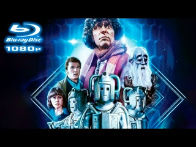
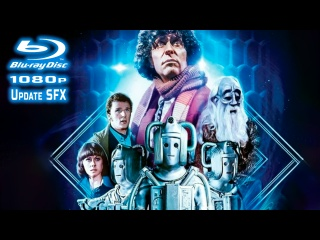
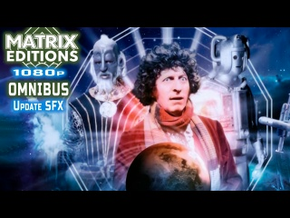
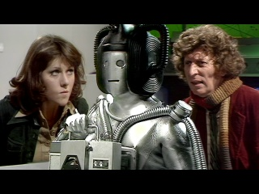
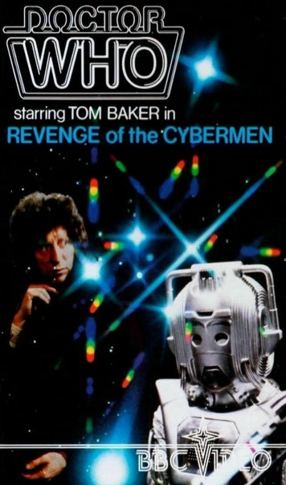
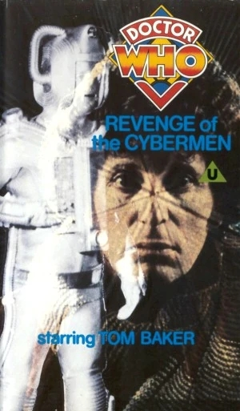
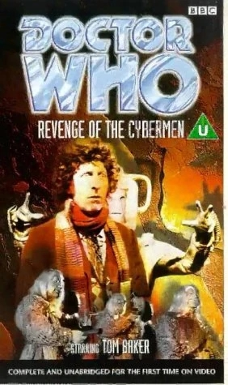
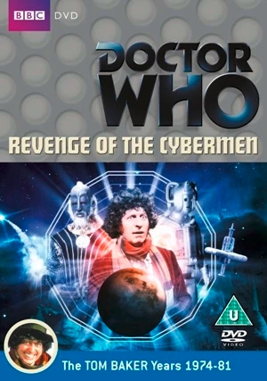
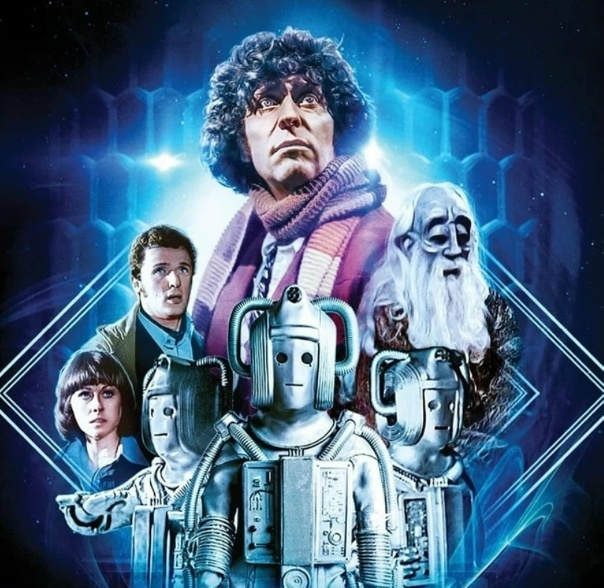

Субтитры: Русские и Английские |  |
|---|---|
с обновленными спецэффектами, 2013 Субтитры: Русские и Английские |  |
с обновлением визуальных эффектов (cunningmunki) Субтитры: отсутствуют |  |
Субтитры: отсутствуют |  |
Revenge of the Cybermen
Дата выхода: 19 апреля - 10 мая 1975
Формат: 4 эпизода по 25 мин.
| |
ТАРДИС оказывается на космической станции «Нерва» у планеты Вога — золотого мира, чьё богатство делает его идеальной мишенью. На станции царит тревога: экипаж гибнет от странной эпидемии, а по коридорам скользят киберматы. Доктор, Сара Джейн и Гарри быстро понимают, что за бедой стоят киберлюди, вынашивающие план мести. В замкнутом пространстве станции героям предстоит столкнуться с хладнокровной логикой врагов, для которых человеческая жизнь — лишь помеха на пути к цели. Серия раскрывает слабость киберлюдей к золоту — этот элемент позже неоднократно используют в разных эпохах сериала.
  VHS - октябрь 1983 / май 1984 |  VHS - апрель 1999 |
|---|---|
  DVD+Boxset - 9 августа 2010 |  Blu-ray - 8 июля 2019 * Версия в нашей группе |
